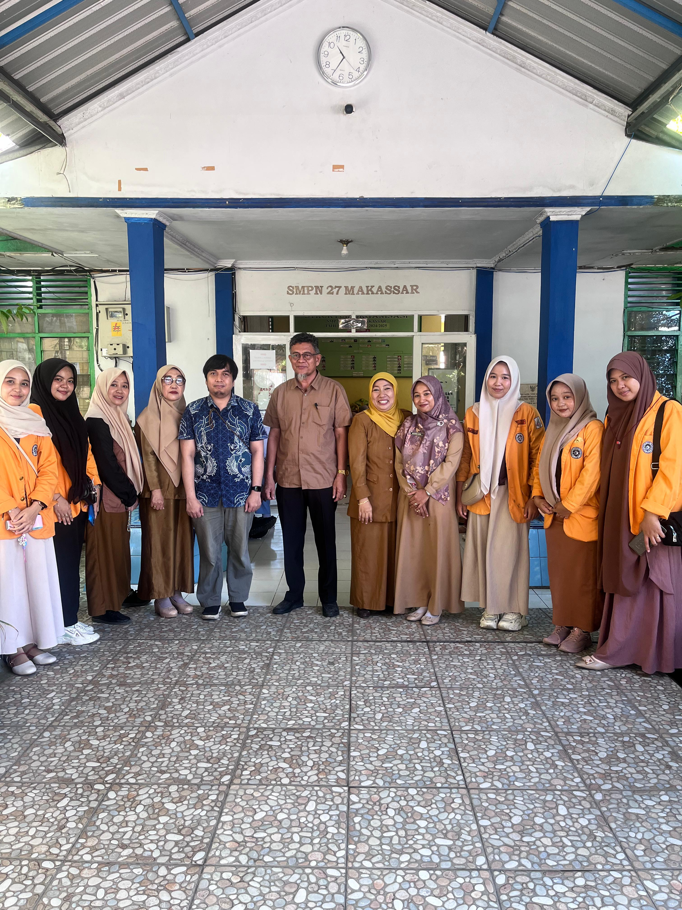

Geometri
Ular Tangga Luas Bangun
Permainan interaktif di mana setiap petak berisi tantangan menghitung luas bangun datar untuk memajukan pion.
Alat/Bahan: Banner bekas, spidol, dadu raksasa.

Membangun logika matematika yang kontekstual, kreatif, dan menyenangkan di SMPN 27 Makassar.
Numerasi bukan sekadar berhitung, melainkan kemampuan mengaplikasikan konsep angka dalam situasi nyata. Di SMPN 27 Makassar, kami menggunakan pendekatan CPA (Concrete-Pictorial-Abstract) untuk membantu siswa memahami matematika dari benda nyata menuju simbol abstrak.
Kumpulan persoalan berbasis kehidupan sehari-hari siswa di Makassar.
Kasus 1 (Belanja di Pasar Terong): Andi diminta ibunya membeli 2kg bawang merah. Harga normal adalah Rp35.000/kg. Toko memberikan diskon 10% jika membeli minimal 2kg. Hitunglah kembalian Andi jika ia membawa uang Rp100.000!
Kasus 2 (Parkir Sekolah): Di parkiran SMPN 27 terdapat 40 kendaraan yang terdiri dari motor dan mobil. Jika total roda adalah 100, hitunglah berapa banyak mobil yang ada menggunakan sistem persamaan linear!
Kasus 3 (Tarif Ojek Online): Tarif ojek online dari sekolah ke Pantai Losari mengikuti rumus $f(x) = 2.000x + 5.000$. Jika jarak tempuh $x = 8$ km, tentukan total biaya yang harus dibayar siswa!
Permainan interaktif di mana setiap petak berisi tantangan menghitung luas bangun datar untuk memajukan pion.
Alat/Bahan: Banner bekas, spidol, dadu raksasa.
Visualisasi garis bilangan menggunakan kelereng untuk memahami konsep penjumlahan dan pengurangan bilangan bulat.
Alat/Bahan: Papan kayu/stirofoam, kelereng, cat warna.
Roda berputar untuk melakukan eksperimen frekuensi harapan secara langsung di depan kelas.
Alat/Bahan: Kardus, paku payung, kertas asturo.
Alat untuk mengukur tinggi pohon atau tiang bendera sekolah menggunakan konsep perbandingan sudut.
Alat/Bahan: Busur derajat, sedotan, benang, pemberat.
| Kelas | Topik Utama | Metode Pembelajaran |
|---|---|---|
| Kelas VII | Bilangan Bulat & Rasio | Media Visual (Papan Bilangan) |
| Kelas VIII | Persamaan Linear & Teorema Pythagoras | Eksperimen Luar Ruas (Klinometer) |
| Kelas IX | Bangun Ruang & Peluang | Pembuatan Model 3D (Kardus Bekas) |